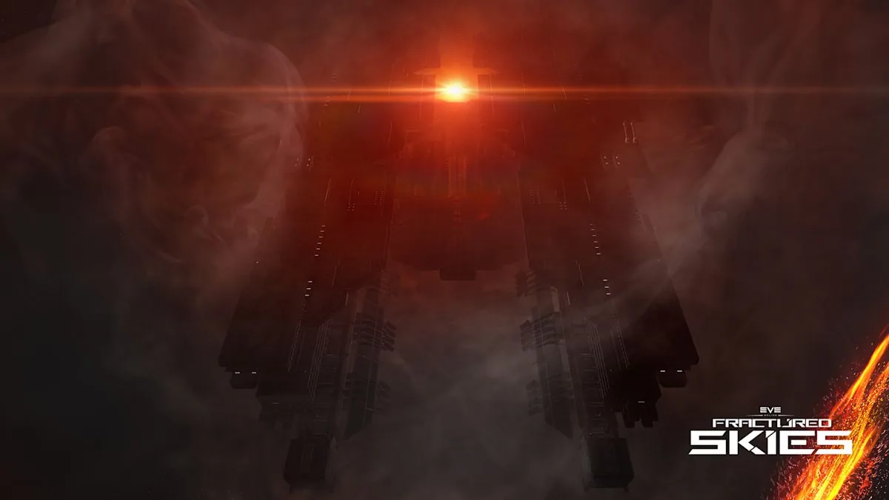
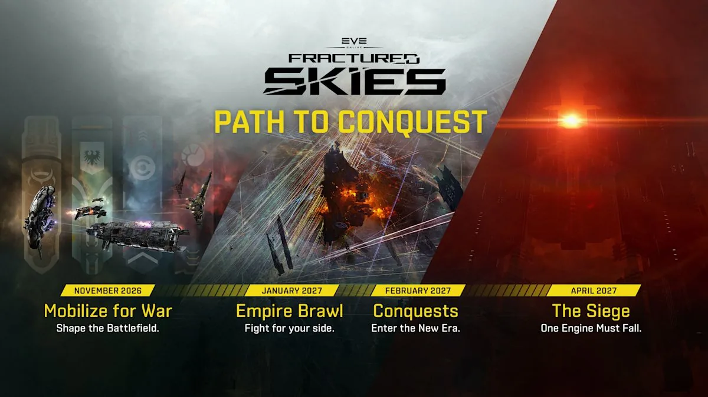

Fractured Skies · Factional Warfare
Conquests
Seasonal Factional Warfare conflicts with a clear endpoint and a winner. The first Conquest begins in February; the Siege follows in April.

Conquest Engine concept. Image: CCP Games / Fenris Creations.
What are Conquests?
Conquests are seasonal Factional Warfare conflicts with a clear endpoint and a winner. Throughout each Conquest, enlisted capsuleers complete objectives and fight over Directives issued by their faction, earning rewards while building Conquest Power.
Every victory matters: the Conquest Power you build during the season provides advantages when the conflict reaches its final Siege.
Seasonal
A Conquest is not an endless war. It runs for a season, with a clear endpoint and a winner.
Directives
Each Directive is a faction-issued battle that can be won or lost — capture, hold or outpace your opponent.
Conquest Power
Victories build power for your side, providing advantages when the conflict reaches the final Siege.
Path to Conquest
CCP's roadmap places the first Conquest in February 2027, with The Siege following in April.

Fractured Skies — Path to Conquest roadmap. Image: CCP Games / Fenris Creations.
Mobilize for War
Shape the battlefield. The expansion launch period sets the stage for what follows.
Empire Brawl
Fight for your side. The empires clash over Drifter technology; the winner gains an exclusive Drifter module in its LP store for a limited time.
Conquests
Enter the new era. The first Conquest begins, and Vanguard expeditions start contributing Conquest Power.
The Siege
One engine must fall. The final Siege of the first Conquest decides the winner.
The roadmap labels months, not exact dates. CCP has not published a specific day for the first Conquest or The Siege.
How a Conquest plays out
The season builds through Directives and victories until the final Siege.
Fight over Directives
Each Directive creates a battle that can be won or lost. They are issued by your faction and shape the course of the Conquest.
Win the battle
The article gives three examples of Directive objectives:
- Capture a system.
- Hold territory against the clock.
- Complete objectives before your opponent.
Build Conquest Power
Every victory matters. Conquest Power earned throughout the season provides advantages when the conflict reaches the final Siege.
The final Siege
Each faction brings its Conquest Engine online. Protect yours and destroy the enemy's — the first side to bring down the opposing engine wins the Conquest.
The Conquest Engines
The behemoth weapons at the heart of the final Siege — and the reason the empires have been preparing.
System-control weapons
Conquest Engines are behemoth, devastating structures capable of asserting control over entire star systems within the Factional Warfare warzones.
The CONCORD pact
CONCORD brokered a pact prohibiting their use as instruments of aggression. The pact is holding — for now. Cracks are appearing in the peace agreements.
One engine must fall
In the Siege, each opposing faction brings its engine online. Your job is to protect yours and destroy theirs.
“The first side to bring down the opposing Conquest Engine wins the Conquest and leaves a permanent mark on the history of New Eden as monuments will be erected in your honor.”
EVE Online Team — Fractured Skies expansion article
EVE Vanguard connection
Ground actions feed the Siege
From February onward, EVE Vanguard expeditions contribute Conquest Power to the chosen side. The ground war becomes part of the wider struggle for the final Siege.
Use the time
The first Conquest is still ahead. CCP's advice is simple: there is time before the fight begins — use it.
- Join a Factional Warfare militia and pick a side.
- Prepare for Directives: system capture, territory control and objective races.
- Watch the January empire brawl; its outcome shapes the road to the Siege.
- If you play EVE Vanguard, expeditions contribute Conquest Power from February.
- Wait for CCP's full Conquest ruleset before committing to a detailed strategy.
FAQ
What are Conquests?
Seasonal Factional Warfare conflicts with a clear endpoint and a winner. Enlisted capsuleers complete objectives and fight over Directives, building Conquest Power ahead of a final Siege.
When does the first Conquest start?
The roadmap places the first Conquest in February 2027. CCP has not published an exact day.
When is The Siege?
The roadmap places The Siege in April 2027. The exact date has not been announced.
What are Directives?
Faction-issued objectives that create a battle. Examples in the expansion article include capturing a system, holding territory against the clock, and completing objectives before your opponent.
What is Conquest Power?
Power earned through victories and objectives during the season. It provides advantages when the conflict reaches the final Siege.
How does a faction win?
In the final Siege, each faction brings its Conquest Engine online. The first side to bring down the opposing Conquest Engine wins the Conquest.
What are Conquest Engines?
Behemoth structures capable of asserting control over entire star systems in the Factional Warfare warzones. Their use is currently prohibited by a CONCORD-brokered pact.
Does EVE Vanguard matter?
Yes. From February onward, Vanguard expeditions contribute Conquest Power to the chosen side.
Do I need to be in Factional Warfare?
The expansion article frames participation around enlisted capsuleers. CCP has not detailed eligibility beyond that, so expect to fight for a faction.
Are the rewards known?
CCP has not published the full Conquest reward structure. The article says capsuleers earn rewards while building Conquest Power, and the winning faction leaves a permanent mark on New Eden with monuments erected in its honor.
Source
Primary sources
Fractured Skies — The Inevitable Conquest
EVE Online Team · expansion article and notes